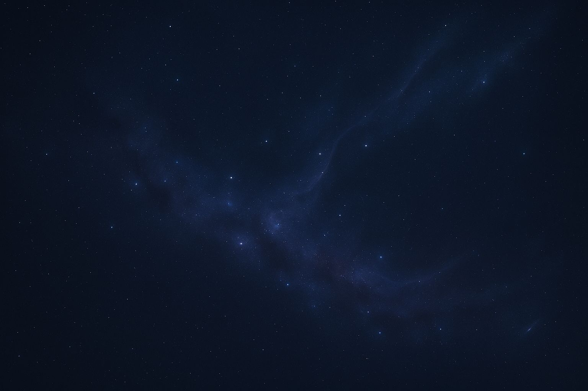

The Cosmic X-Ray: Black Hole Shadows
"Just as a doctor uses X-rays to see inside the human body, scientists can use black hole shadows to X-ray the hidden physics of the universe."
In 2019, the Event Horizon Telescope (EHT) captured humanity's first image of a black hole shadow — the dark region at the center of the glowing accretion disk around M87*. That blurry orange donut made history. But what if that shadow could tell us more than just "black holes exist"?

A glowing black hole shadow surrounded by accretion disk and cosmic background - Presented by Anshuman Singh
Core Discovery: Recent research shows that the exact shape and size of black hole shadows could reveal physics beyond Einstein's General Relativity — including extra dimensions, quantum gravity effects, and dark matter interactions.
When light passes too close to a black hole, it gets trapped forever. The boundary between trapped and escaping light creates a "shadow" — a dark region surrounded by bright emission. Einstein's theory predicts this shadow should be nearly circular. But if there's new physics at play, the shadow could be distorted in tell-tale ways.
What Exactly is a Black Hole Shadow?
Scientific diagram explaining the black hole shadow, photon ring, and event horizon
How spacetime might look if extra dimensions or new physics modify Einstein's gravity
The Physics Behind the Shadow
- Photon Sphere: A region where light orbits the black hole multiple times before escaping
- Event Horizon: The point of no return - boundary from which nothing can escape
- Accretion Disk: Superheated matter swirling into the black hole, emitting intense radiation
- Shadow Boundary: The edge between light that escapes and light that gets trapped forever
Shadow Size ≈ Rshadow = 3√3 GM / c² ≈ 2.6 Rs
where Rs = Schwarzschild radius (for non-rotating black hole)
This simple formula assumes a perfect Schwarzschild black hole. But real black holes rotate, have accretion disks, and exist in complex environments — all of which can modify the shadow.
The EHT Revolution & M87*
The Event Horizon Telescope isn't one telescope — it's a global network of radio telescopes synchronized to create an Earth-sized virtual telescope. This gives it unprecedented angular resolution, capable of seeing details as fine as a doughnut on the Moon!
Key EHT Finding: The M87* shadow is indeed circular, consistent with Einstein's predictions within current measurement uncertainties. But the precision needed to detect deviations is just now becoming possible.
Why M87* Was Perfect
- Supermassive: 6.5 billion times the Sun's mass - large enough to image from Earth
- Relatively Close: "Only" 55 million light-years away in cosmic terms
- Active Galaxy: Powerful jet of particles provides contrast for the shadow
- Face-On View: We see the accretion disk nearly face-on, ideal for shadow imaging
How Shadows Reveal New Physics
Here's where it gets exciting: Different types of "new physics" create distinct, recognizable distortions in the shadow shape:
| New Physics | Shadow Distortion | What It Reveals |
|---|---|---|
| Extra Dimensions | Elliptical stretching | Hidden spatial dimensions predicted by string theory |
| Quantum Gravity | Fuzzy or "quantum hair" edges | Quantum effects near event horizon |
| Dark Matter Halo | Enlarged, asymmetric shadow | Dark matter distribution around black hole |
| Modified Gravity | Peanut-shaped distortion | Deviations from Einstein's field equations |
| Exotic Matter | Irregular, lumpy edges | New particles or fields around black hole |
The Mathematical Bridge
Researchers use a technique called "gravitational lensing backward calculation." They start with different theoretical models (extra dimensions, modified gravity, etc.), calculate the expected shadow shape, then compare with observations.
For extra dimensions: Rshadow = RGR × (1 + εD)
where εD represents extra-dimensional corrections
The Universe's Laboratory
Black holes serve as natural laboratories where extreme physics becomes observable. Unlike particle accelerators, these cosmic giants test fundamental laws under conditions impossible to recreate on Earth.
Future Telescopes: The Next Generation
Current telescopes like EHT are just the beginning. Next-generation observatories will provide the precision needed to detect these subtle distortions:
The cosmic canvas where future telescopes will reveal new physics through black hole shadows
Upcoming Observatories
- EHT 2.0: More telescopes, higher frequencies, better resolution
- Space VLBI: Radio telescopes in space for even larger baselines
- BlackHoleCam: European project focusing on Sagittarius A*
- Millimeter Arrays: New ground arrays in optimal locations
Precision Goal: Future telescopes aim for 2-5% measurement precision on shadow shape. At this level, deviations from Einstein's predictions could become detectable if they exist.
Cosmic Implications
Why This Matters Beyond Black Holes
Black hole shadows serve as natural laboratories for extreme physics. Unlike particle accelerators that smash particles together, black holes test gravity in its most intense form — where spacetime curvature is extreme and quantum gravity effects might become noticeable.
"Black holes are the simplest objects in the universe — described only by mass, spin, and charge. Yet they may hold the keys to the most complex physics we've ever imagined."
The Big Picture
- Unified Physics: Could bridge quantum mechanics and general relativity
- Dark Matter: Might explain the nature of 85% of the universe's matter
- Extra Dimensions: Could validate string theory predictions
- Fundamental Constants: Might reveal if physical "constants" vary in extreme conditions
Timeline: Within the next 10-15 years, as next-generation telescopes come online, we may have answers to whether Einstein's theory needs modification, and what new physics governs the most extreme regions of our universe.